Modding:
-
Weapon:
Physical:
Damage Típus Magyarázat Részletes Effective Impact Ez a Damage fajta a Corpus és a Corrupted enemy típusra a leghatásosabb. 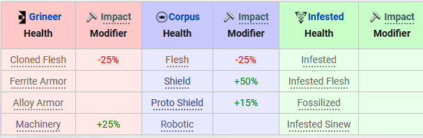 Puncture Ez a Damage fajta a Grineer,Corrupted enemy típusra a leghatásosabb. 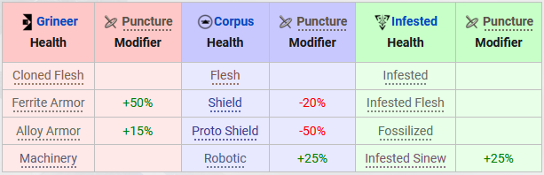 Slash A legtöb enemyípusra hatásos. Infestedekre a laghatásásabb illetve a többi enemyből az alap szintűek ellen. 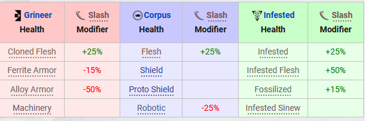 Elemental:
Heat Ez a damage típus Kifejzetten az infesded enemyre hatásos valamint a grineer enemik valamelye, a corpus enemy elgtöbbje rezistens erre a damagetípusra. 
Cold Ez a damage típuskifejezetten a grineer és a corpus enemykre hatásos az infested enemy rezistens erre a damagera. 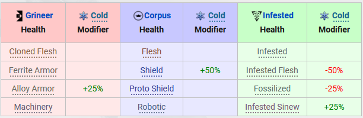 Toxin Ez a damage típus kifejezetten a crpus enemyre hatásos, a többi típus valamelyes rezistens rá. 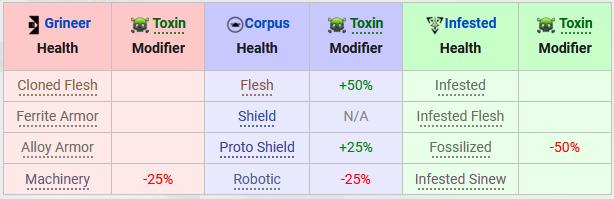 Electricity Ez a damaga típus a minden enemy típusra hatásos a corpus és grineer enemikből van amelyik jobban rézékeny rá. A grineerekből vlamelyik viszont kifejezetten rezistens a damagera. 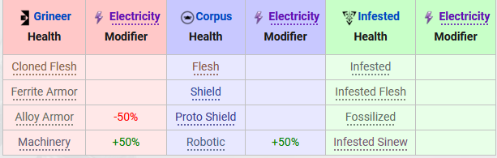 Elemental Combo:
Blast Heat + Cold A legtöbb enemyre jó kis szinten nagyobb szinteken már csak a grineer és infested enemyik bizonyos típusaira jó. 
Radiation Heat + Electricity A leguniverzálisab elemental combo mivel minden enemy típus érzékeny rá viszont kis szinten ellenállóbbak. 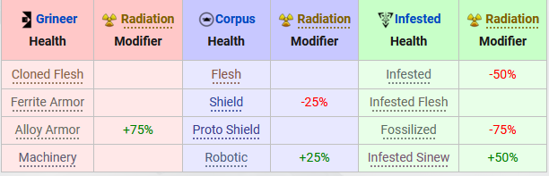 Gas Heat + Toxin Ez az elemental combo damage az infestedekre a leghatásosabb valamint a magasabb armorszinten levő enemykre. 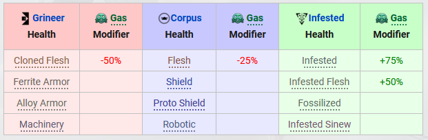 Magnetic Electricity + Cold Ez a damage fajta a corpus enemyik halála mivel nagyon gyorsan képes levenni az armorjukat és shildjuket. A Többi enemy típusra átlagosan hat. 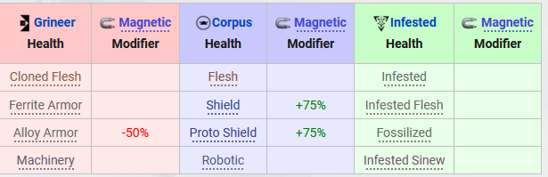 Corrosive Electricity + Toxin Ez a damage típus a grineer és infested enemykre a leghatásosabb, a corpus enemykre nem teljesen hatásos. 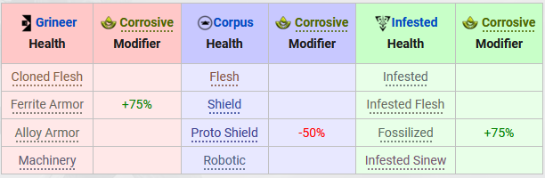 Viral Toxin + Cold Ez a damage típus a grineer és corpus enemyk hpjára van nagy hatással az infestedek átlagosan sebződnek. 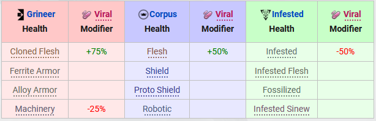 -
Warframe:
Physical:
A Warframe Physical modok azok a modok amelyek a frame fizikai tulajdonságait erősíti. Ezek pl:
-
HealtPoint -> Ez az érték a frame életpontját módosítja Shield
Shield -> Ez az érték a frame Pajzsát módosítjaEnergy
Energy -> Ez az érték a frame energyét módosítjaArmor
Armor -> Ez az érték a frame ellenállóságát módosítja
Ability:
A warframe ability modok azok a modok ammelyekkel a frame képesságeinek értékét tudjuk módosítani, ezáltal amilyen a frame képességének a legkedvezőbb egyensúlyt felállítani.
Strengt Duration Range Efficiency Augment:
Orbiter:
- Mod's:
- Incubator:
- Arsenal:
- Void Relic's:
- Sentinel Case:
- Foundry:
- Room of Nidus:
- Rom of Operator:
- Room of Lotus: